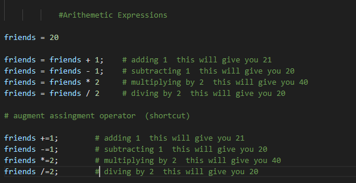

Variables
A variable is a literal assignment to an identifier Java variables have a type attached.
Python does not have a built in support for constants
Unlike other Languages Python does not come with a pre built constants type. However if needed you could Uppercase and comment telling others not to change its value.
Types
Python's Syntax is Similar to Javascript as it is not statically typed. In Python, data types are essential as they define the kind of value a variable can hold and the operations that can be performed on it. Python has several built-in data types, each serving a specific purpose.
- Primitive Types
- Primitive types are Int, Float, Strings, and Booleans.
- Int (int)
- Represents whole numbers.
- Float (float)
- Represents floating-point numbers (decimal values).
- Boolean (bool)
- Represents True or False values.
- String (str)
- Represents a sequence of characters.
Primitive Types
Non-Primitive Types
Example: numbers = [1, 2, 3, 4]
Expressions
Expressions are units of code that can be evaluated and resolve to a value
- Arithmetic Expressions 
- String Expressions
- String Format
- List Expressions
- Tuple Expressions
- Dictionary Expressions
- Set Expressions
For Dictionaries Please Follow Link to gather notes
For Sets Please Follow Link to gather notes
UserInput
Grabing user input can be done by importing scanner object Declaring a variable then assiging it to the Scanner result
If Statements
if statement is a conditional statement. It is used to execute a block of code only when a specific condition is met.

For Loops
A for loop is used for iterating over a sequence (that is either a list, a tuple, a dictionary, a set, or a string).
Functions
A function is a block of code that performs a specific task. Suppose we need to create a program to make a circle and color it. We can create two functions to solve this problem: function to create a circle function to color the shape Dividing a complex problem into smaller chunks makes our program easy to understand and reuse.